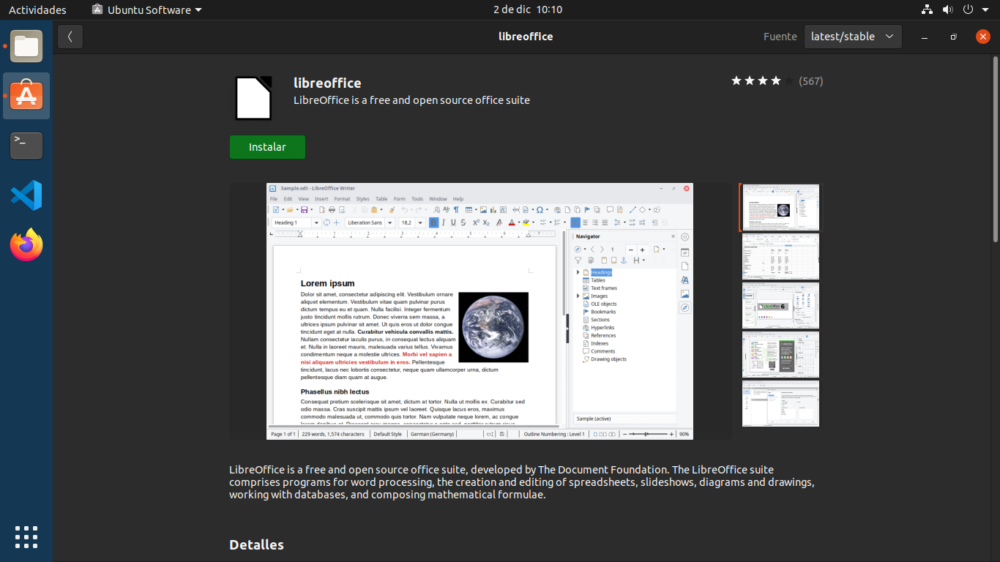
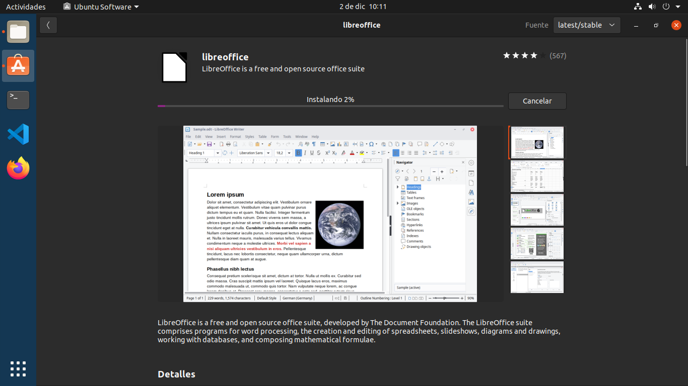

Un paquete de oficina o paquete ofimático, una suite de oficina o suite ofimática, una serie de oficina o serie ofimática, es la recopilación de aplicaciones informáticas utilizadas en oficinas, para realizar diferentes funciones sobre archivos y documentos, como crear, modificar, organizar, escanear, imprimir, entre otros. El desarrollo de los programas de oficina en paquetes en lugar de hacerse individualmente puede atribuirse a la necesidad de interoperatividad entre aplicaciones y a la reducción de costos de adquisición en el caso de las suites ofimáticas comerciales.
Apache OpenOffice es una suite de oficina de código abierto líder para el procesamiento de palabras, hojas de cálculo, presentaciones, gráficos, bases de datos y más. Se encuentra disponible en varios idiomas y funciona en todos los sistemas comunes. Almacena todos sus datos en un formato que es un estándar internacional y puede también leer y escribir archivos producidos por otros paquetes de oficina. Puede ser descargado y utilizado completamente sin cargo para cualquier propósito.
Lo mejor de todo, Apache OpenOffice puede ser descargado y utilizado en forma completamente libre sin pagar licencias. Apache OpenOffice está liberado bajo la licencia Apache 2.0. Esto significa que usted puede utilizar el programa para cualquier propósito: doméstico, comercial, educacional, administración pública. Usted puede instalarlo en tantas computadoras como desee. Usted puede hacer copias y distribuirlas entre sus familiares, amigos, estudiantes, empleados… cualquier persona que desee.
LibreOffice es un paquete de software de oficina libre y de código abierto desarrollado por The Document Foundation. Se creó en 2010 como bifurcación de OpenOffice.org, otro antiguo proyecto de código abierto, que a su vez tenía como base inicial a la suite ofimática StarOffice, desarrollada por StarDivision, adquirida por Sun Microsystems en agosto de 1999. Su entorno está programado en los lenguajes informáticos C++, Java y Python. Cuenta con un procesador de texto (Writer), un editor de hojas de cálculo (Calc), un gestor de presentaciones (Impress), un gestor de bases de datos (Base), un editor de gráficos vectoriales (Draw) y un editor de fórmulas matemáticas (Math).
En nuestro caso hemos elegido LibreOffice por poder instalarlo desde Ubuntu Software.
Nuestra elección tanto para Windows como para Linux se ha basasdo en rendimiento, sencillez de instalación, componentes y sobre todo que sea gratis. En Windows nos hemos decantado por OpenOffice ya que funciona (por experiencia) propia mejor que LibreOffice. Para Ubuntu, por su sencillez de instalacion desde la interfaz grafica LibreOffice.